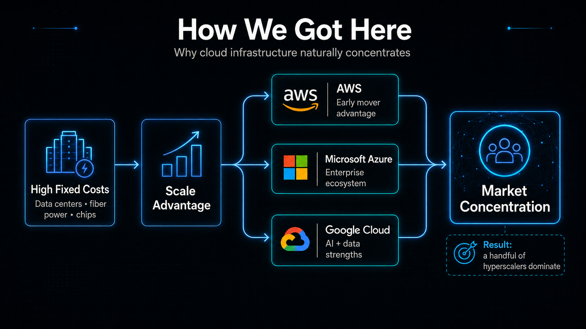
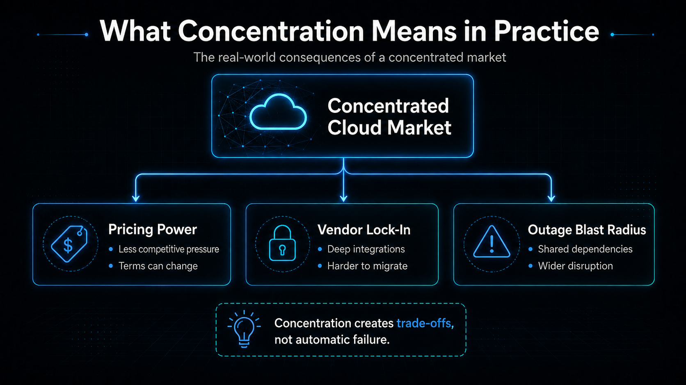
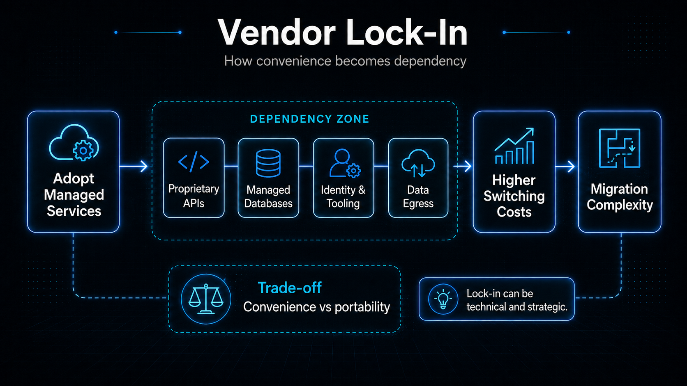
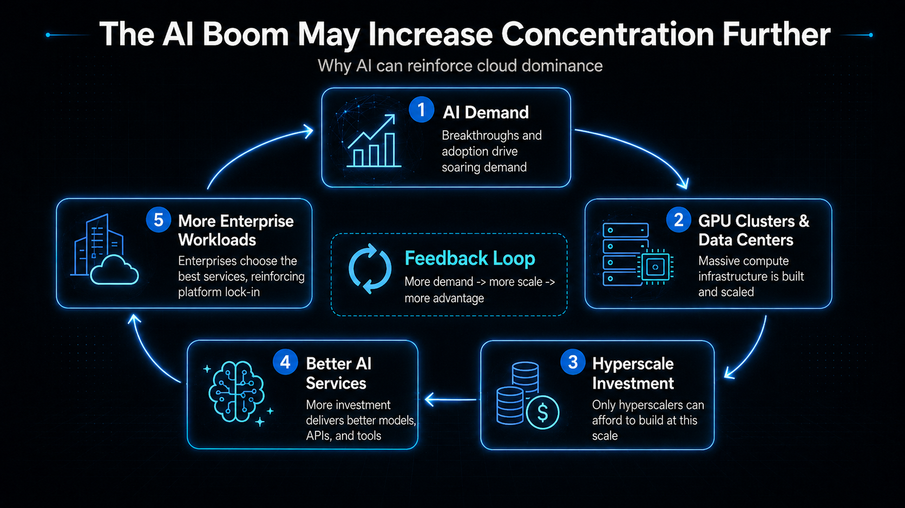
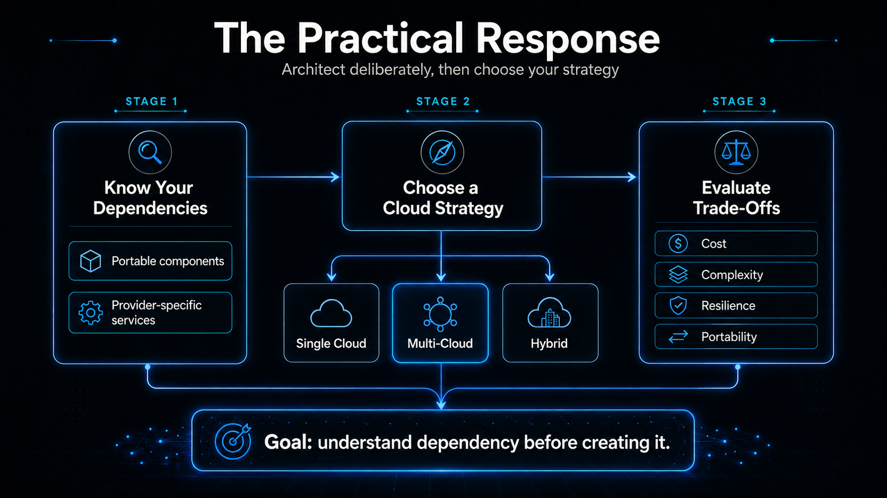

The Great Cloud Consolidation: How Three Companies Came to Dominate Cloud Infrastructure

The modern internet may feel decentralized, but much of the infrastructure underneath it is increasingly concentrated in the hands of a few companies.
As of Q2 2026, Amazon Web Services held approximately 28% of the global cloud infrastructure services market, Microsoft held 20%, and Google held 15%. Together, the three companies accounted for roughly 63% of worldwide spending.
And the market itself is expanding rapidly. Enterprise spending on cloud infrastructure services reached approximately $143 billion in Q2 2026 alone, up 43% from the same period a year earlier. According to Synergy Research Group, the market has doubled in size over the previous 11 quarters, with generative AI becoming a major driver of that acceleration.
That concentration is worth paying attention to—not because AWS, Microsoft Azure, or Google Cloud are inherently bad choices, but because the structure of the market has practical consequences for almost every company building modern digital products.
How We Got Here

Cloud infrastructure is an extraordinarily capital-intensive business.
Competing at hyperscale requires more than building good software. Providers must continuously invest in data centers, networking infrastructure, processors, storage systems, cybersecurity, global fiber connectivity, energy capacity, engineering talent, and increasingly, enormous clusters of AI accelerators.
Those requirements naturally favor companies capable of investing tens of billions of dollars over long periods.
AWS was one of the earliest companies to turn infrastructure into an on-demand service available to developers at global scale. Amazon launched S3 in 2006, followed by EC2 later that year, allowing developers to access storage and computing capacity without purchasing and operating physical servers themselves.
Microsoft announced Windows Azure in 2008, bringing its enterprise software and data-center experience into the emerging cloud market. Google also launched App Engine in 2008, allowing developers to run applications directly on Google's infrastructure.
AWS's early-mover advantage helped it establish a deep ecosystem of services, partners, developers, certifications, and enterprise customers.
Microsoft followed a different path. For organizations already heavily invested in Microsoft 365, Windows Server, Active Directory, SQL Server, Dynamics, and Microsoft's broader enterprise ecosystem, Azure can provide a comparatively low-friction path into cloud infrastructure.
Google Cloud has increasingly differentiated itself around data infrastructure, artificial intelligence, machine learning, and high-performance computing.
That strategy is producing significant growth. In Q2 2026, Google Cloud revenue increased 82% year-over-year to $24.8 billion, with Alphabet citing growth in enterprise AI solutions, AI infrastructure, and core Google Cloud Platform services. Microsoft's Azure and other cloud services revenue grew 43% year-over-year during the quarter ending June 30, 2026.
The result is a market in which AWS remains the largest provider while Microsoft and Google continue expanding rapidly behind it.
What Concentration Means in Practice
Market concentration is not automatically a problem. Large cloud providers can deliver levels of reliability, geographic reach, security engineering, infrastructure automation, and service depth that would be extremely difficult for most organizations to reproduce independently.
But concentration creates trade-offs.

- Switching costs can reduce customer flexibility. Moving an application from one cloud provider to another is rarely as simple as copying files between servers. Modern applications increasingly depend on managed databases, serverless runtimes, identity platforms, event systems, analytics tools, proprietary APIs, AI services, and cloud-specific networking architectures.
- Convenience can come at the cost of portability. Managed cloud services are attractive precisely because they remove work. A proprietary database, serverless platform, AI API, message queue, or analytics service can allow a development team to build much faster, but deeper integration can also increase the technical and financial cost of moving elsewhere later.
- Outages can have an outsized blast radius. When thousands of otherwise unrelated applications depend on the same cloud provider, region, database service, networking layer, or identity system, a single infrastructure failure can affect a surprisingly large part of the internet at once.
Vendor Lock-In Is More Than a Technical Problem
Vendor lock-in is often discussed as an engineering issue, but it can also become a strategic business problem.

Every provider-specific dependency can make an application easier to build today while making it harder to move tomorrow. Data-transfer charges, proprietary APIs, architecture decisions, specialized databases, identity systems, and deeply integrated managed services can all contribute to switching costs.
Regulators have increasingly taken these barriers seriously. The UK's Competition and Markets Authority has identified data-egress fees and technical interoperability barriers as factors that can restrict customers' ability to switch cloud providers or operate effectively across multiple clouds.
Some of these practices are beginning to change. Under the European Union's Data Act, qualifying cloud-switching charges, including relevant data-egress charges associated with switching, are scheduled to be removed from January 12, 2027.
But removing a transfer fee does not automatically make an application portable. A system built around dozens of provider-specific services can still require substantial redesign before it can operate somewhere else.
The AI Boom May Increase Concentration Further
Artificial intelligence is adding another dimension to cloud consolidation.
Training and operating advanced AI systems requires enormous computing capacity, specialized accelerators, high-speed networking, large-scale storage, sophisticated orchestration software, and significant access to electricity.
Those requirements favor organizations that already operate infrastructure at hyperscale.

Generative AI has become one of the primary drivers behind the recent acceleration in cloud infrastructure spending. That creates an important feedback loop: more AI demand drives more cloud investment, and greater cloud investment allows the largest providers to build even larger data centers, AI clusters, and specialized services.
Those capabilities then attract additional developers, enterprises, AI companies, and workloads back onto their platforms.
Cloud infrastructure is therefore becoming more than the foundation of websites and enterprise applications. It is increasingly becoming part of the foundation on which the AI economy itself is being built.
The Practical Developer Response
None of this is an argument against using AWS, Azure, or Google Cloud.
For many organizations, using one of the major providers will remain the most practical decision. Their scale provides access to infrastructure, security capabilities, geographic distribution, managed services, AI platforms, and engineering resources that would be extraordinarily expensive to reproduce independently.
The better lesson is to understand where your dependencies are being created.

Development teams should know which components of their architecture are relatively portable and which are deeply tied to a specific provider. They should understand the cost of moving critical data and consider what would happen if an important managed service changed its pricing, availability, licensing terms, or technical direction.
The goal is not necessarily to avoid provider-specific services. In many cases, the speed, reliability, and operational simplicity they provide are worth the trade-off.
The important thing is to make that trade-off deliberately rather than discovering it years later when migration has become expensive.
What About Multi-Cloud?
Reducing dependence on a single provider is one reason organizations adopt multi-cloud strategies.
But multi-cloud is not free.
Operating across several providers can increase networking complexity, security requirements, observability challenges, engineering overhead, data synchronization problems, and the number of platforms and skills a technical team must maintain.
For many organizations, the best strategy may not be to run every application simultaneously across AWS, Azure, and Google Cloud.
A more practical approach may simply be to understand the cost of dependency before creating it, use portable technologies where portability matters, and accept deeper provider integration where the business value clearly justifies it.
The Bigger Picture
Cloud computing originally promised to remove infrastructure as a constraint.
Instead of purchasing servers, companies could rent computing power when they needed it. Startups gained access to infrastructure that previously required enormous amounts of capital. Developers could launch products globally without building their own data centers.
That transformation has been overwhelmingly valuable.
But it has also produced a new layer of dependency.
Much of the digital economy now runs on infrastructure owned and operated by a remarkably small group of companies. As cloud infrastructure expands further—and as artificial intelligence increases global demand for computing capacity—the strategic question for businesses will no longer be simply:
Which cloud provider should we use?
It will increasingly become:
How much of our technology stack are we comfortable allowing any one provider to control?
That is a question worth answering before switching becomes difficult.
References
- Synergy Research Group. “Q2 Cloud Market Passes $143 Billion; Highest Growth Rate in Eight Years.” July 2026.
- Amazon Web Services. AWS historical materials covering the launch of Amazon S3 and Amazon EC2 in 2006.
- Microsoft. “Microsoft Unveils Windows Azure at Professional Developers Conference.” October 2008.
- Google Cloud. “Introducing Google App Engine.” April 2008.
- Alphabet Inc. Q2 2026 Financial Results. Google Cloud revenue increased 82% year-over-year to $24.8 billion.
- Microsoft. Fiscal Year 2026 Fourth Quarter Results. Azure and other cloud services revenue increased 43% year-over-year.
- UK Competition and Markets Authority. Cloud services and business software market findings and actions, 2026.
- European Commission. EU Data Act guidance covering cloud switching and switching charges.
- Reuters. Coverage of the October 2025 AWS cloud outage and its impact across multiple online services.
Market data and company growth figures are current through Q2 2026.